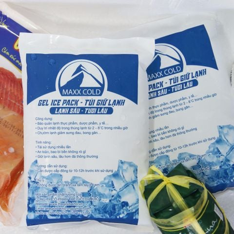

Tóm tắt nhanh
Đá khô gel là gì?
Trên thị trường, “đá khô gel”, “đá gel khô” hoặc “gel giữ lạnh CO₂” thường được dùng để chỉ túi gel giữ lạnh đã cấp đông. Sản phẩm này được đặt trong thùng xốp, thùng carton cách nhiệt hoặc túi giữ nhiệt để duy trì nhiệt độ thấp trong quá trình vận chuyển.
Điểm cần phân biệt là đá khô gel không giống hoàn toàn với đá khô CO₂ rắn. Đá khô CO₂ rắn có nhiệt độ khoảng -78.5°C và thăng hoa trực tiếp thành khí CO₂. Gel giữ lạnh thường được cấp đông trong tủ đông, sau đó hấp thụ nhiệt từ môi trường xung quanh để giữ mát hàng hóa. Vì vậy gel phù hợp với vận chuyển lạnh thông thường, còn đá khô CO₂ phù hợp khi cần lạnh sâu.
Khi nào nên dùng đá khô gel?
- Giao thực phẩm tươi trong ngày: thịt cá sơ chế, rau củ cao cấp, đồ đông lạnh nhẹ, bánh kem, suất ăn lạnh và nguyên liệu nhà hàng.
- Giao đồ uống và nguyên liệu pha chế: cold brew, sữa, kem, topping, nước ép hoặc sản phẩm cần hạn chế tăng nhiệt khi di chuyển.
- Dược phẩm và mỹ phẩm: hàng cần giữ mát 2-8°C hoặc hạn chế sốc nhiệt trong quãng đường nội thành.
- Thương mại điện tử hàng lạnh: shop online cần đóng gói đơn lẻ, dễ thao tác, ít rủi ro hơn so với đá khô CO₂ rắn.
- Sự kiện và sampling: giữ lạnh sản phẩm trưng bày, thùng phát mẫu hoặc quầy pop-up không có tủ lạnh cố định.
Đá khô gel khác đá khô CO₂ rắn như thế nào?
Kết luận: Nếu chỉ cần giữ mát hoặc giữ lạnh trong thùng giao hàng, đá khô gel là lựa chọn thực tế. Nếu cần nhiệt độ rất thấp hoặc giữ đông sâu, nên dùng đá khô CO₂ rắn và tuân thủ quy định an toàn.
Cách dùng đá khô gel để đóng gói hàng lạnh
- Cấp đông gel trước khi dùng: đặt túi gel trong tủ đông đến khi lõi gel đông cứng hoàn toàn, không chỉ lạnh bề mặt.
- Chọn thùng cách nhiệt: dùng thùng xốp EPS, thùng foam hoặc carton có lớp cách nhiệt để giảm thất thoát lạnh.
- Lót lớp đệm: đặt giấy, màng xốp hoặc túi PE giữa gel và sản phẩm dễ cháy lạnh như rau lá, bánh kem, mỹ phẩm nhạy cảm.
- Phân bổ gel đều: đặt gel ở đáy, hai bên và phía trên tùy hướng thất thoát nhiệt; không dồn toàn bộ gel vào một góc.
- Đóng kín nhanh: giảm thời gian mở nắp thùng, dán kín mép thùng và hạn chế khoảng trống lớn bên trong.
- Giao theo tuyến phù hợp: ưu tiên tuyến giao ngắn, tránh để hàng trong cốp xe nóng hoặc ngoài nắng lâu.
Lượng đá khô gel tham khảo
Lượng gel cần dùng phụ thuộc vào kích thước thùng, nhiệt độ hàng khi đóng gói, nhiệt độ môi trường, thời gian giao và yêu cầu nhiệt độ của sản phẩm. Bảng dưới đây dùng để ước tính ban đầu cho đơn hàng giao nội thành.
Lưu ý: Với hàng có yêu cầu nhiệt độ nghiêm ngặt, nên chạy thử đóng gói trước khi giao thật để xác nhận nhiệt độ trong thùng theo thời gian.
Lợi ích của đá khô gel cho doanh nghiệp giao hàng lạnh
- Dễ thao tác: nhân viên chỉ cần cấp đông, lấy túi gel và xếp vào thùng theo quy trình đóng gói.
- Phân bổ lạnh linh hoạt: túi gel có thể đặt quanh sản phẩm, phù hợp nhiều kích thước thùng và đơn hàng lẻ.
- Ít rủi ro hơn lạnh sâu: không gây bỏng lạnh nghiêm trọng như đá khô CO₂ nếu thao tác thông thường, nhưng vẫn cần tránh làm rách túi.
- Phù hợp giao nội thành: hỗ trợ giữ mát trong vài giờ đến nửa ngày khi kết hợp thùng cách nhiệt tốt.
- Tối ưu chi phí đóng gói: dùng được cho nhiều ngành như thực phẩm, đồ uống, mỹ phẩm, dược phẩm và quà tặng lạnh.
Câu hỏi thường gặp về đá khô gel
Đá khô gel có giống đá khô CO₂ rắn không?
Không hoàn toàn giống. Đá khô gel là cách gọi phổ biến của túi gel giữ lạnh, thường dùng để giữ mát hoặc giữ đông nhẹ. Đá khô CO₂ rắn lạnh sâu khoảng -78.5°C và thăng hoa thành khí, phù hợp khi cần nhiệt độ rất thấp.
Đá khô gel giữ lạnh được bao lâu?
Thời gian giữ lạnh phụ thuộc khối lượng gel, nhiệt độ cấp đông ban đầu, chất lượng thùng xốp hoặc thùng cách nhiệt, nhiệt độ môi trường và tần suất mở nắp. Đơn hàng nội thành thường dùng nhiều túi gel nhỏ để phân bổ lạnh đều quanh sản phẩm.
Có đặt đá khô gel trực tiếp lên thực phẩm được không?
Không nên đặt trực tiếp lên thực phẩm hở hoặc sản phẩm dễ cháy lạnh. Nên dùng bao bì kín, lớp lót hoặc vách ngăn để tránh túi gel làm biến dạng, ướt nhãn hoặc ảnh hưởng bề mặt sản phẩm.
Khi nào nên dùng đá khô CO₂ thay vì đá khô gel?
Nếu hàng cần giữ đông sâu, vận chuyển mẫu sinh học, vaccine hoặc yêu cầu dưới -18°C trong thời gian dài, đá khô CO₂ rắn thường phù hợp hơn. Với hàng giữ mát 2-8°C hoặc giao lạnh nội thành, đá khô gel dễ triển khai hơn.
Đặt đá khô gel, gel giữ lạnh tại Hà Nội
Tân Phúc Hưng cung cấp gel giữ lạnh CO₂ và các giải pháp làm lạnh đóng gói cho khách hàng tại Hà Nội. Doanh nghiệp có thể đặt theo nhu cầu vận chuyển thực phẩm, đồ uống, mỹ phẩm, dược phẩm hoặc kết hợp với đá khô CO₂ khi cần giữ lạnh sâu hơn.